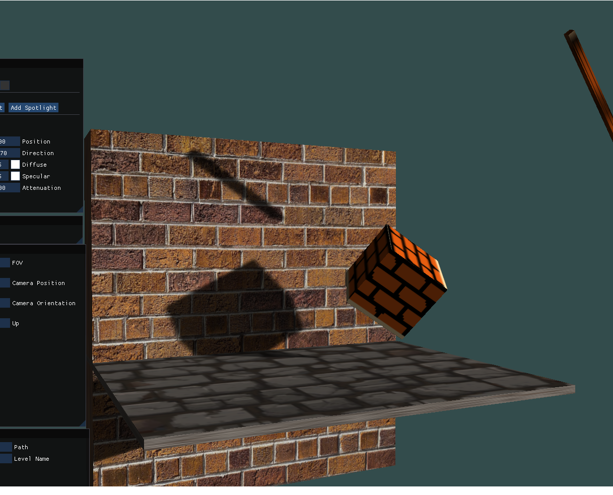

Description
Video
Checkpoint demonstration
Hurtbox demonstration
My work
I focused on a pause system that does not rely on Time.timeScale. Instead, a centralized GameStateHandler drives the paused state, and player logic explicitly freezes movement + gravity + animation, while storing/restoring values to avoid bugs (like infinite jumping when pausing mid-air).
GameStateHandler (singleton + state machine + pause/resume)
public enum GameState
{
Playing,
Paused,
GameOver
}
public class GameStateHandler : MonoBehaviour
{
public static GameStateHandler Instance { get; private set; }
public GameState CurrentState { get; private set; } = GameState.Playing;
public Animator[] animators;
private UIManager uiManager;
private PlayerMovement playerMovement;
public bool isGameOver = false;
void Awake()
{
if (Instance == null) Instance = this;
else { Destroy(gameObject); return; }
uiManager = GetComponent<UIManager>();
if (uiManager == null)
{
Debug.Log("UIManager not found in scene, please attach.");
}
}
void Start()
{
if (uiManager != null) uiManager.OnResumePress();
}
public void ChangeState(GameState newState)
{
if (CurrentState == newState) return;
CurrentState = newState;
switch (newState)
{
case GameState.Paused: PauseGame(); break;
case GameState.Playing: ResumeGame(); break;
case GameState.GameOver: GameOver(); break;
}
}
public void TogglePause()
{
if (CurrentState == GameState.Playing) ChangeState(GameState.Paused);
else if (CurrentState == GameState.Paused) ChangeState(GameState.Playing);
}
public void PauseGame()
{
Debug.Log("Game Paused");
foreach (Animator animator in animators)
{
animator.enabled = false;
}
}
public void ResumeGame()
{
if (uiManager != null) uiManager.OnResumePress();
Debug.Log("Game Resumed");
ChangeState(GameState.Playing);
}
public void GameOver()
{
if (CurrentState == GameState.Paused) ResumeGame();
ChangeState(GameState.GameOver);
isGameOver = true;
Debug.Log("Game Over");
if (playerMovement != null) playerMovement.enabled = false;
}
}Player pause guard (freeze gravity + animation, restore cleanly)
// PlayerMovement
if (GameStateHandler.Instance != null &&
GameStateHandler.Instance.CurrentState == GameState.Paused)
{
if (ani != null && ani.speed != 0)
{
previousAnimatorSpeed = ani.speed;
ani.speed = 0;
}
if (rb.useGravity)
{
isGravityEnabled = true;
rb.useGravity = false;
rb.linearVelocity = Vector3.zero;
}
transform.position = previousPosition;
return;
}
else
{
if (!isGravityEnabled && rb.useGravity == false)
{
rb.useGravity = true;
}
if (ani != null && ani.speed == 0 && previousAnimatorSpeed != 0)
{
ani.speed = previousAnimatorSpeed;
}
}Checkpoint trigger (store respawn point + feedback)
public class Checkpoint : MonoBehaviour
{
private Respawner respawner;
private BoxCollider checkPointCollider;
public ParticleSystem effect;
[System.NonSerialized] public AudioManager audioManager;
void Awake()
{
checkPointCollider = GetComponent<BoxCollider>();
respawner = GameObject.FindGameObjectWithTag("Respawn").GetComponent<Respawner>();
audioManager = GameObject.FindGameObjectWithTag("Audio").GetComponent<AudioManager>();
}
private void OnTriggerEnter(Collider other)
{
if (other.gameObject.CompareTag("Player"))
{
respawner.respawnPoint = this.gameObject;
checkPointCollider.enabled = false;
audioManager.PlaySFX(audioManager.checkpoint);
effect.Play(true);
}
}
}Damage source trigger (hurt / death routing)
public class DamageSource : MonoBehaviour
{
PlayerUI playerUI;
PlayerMovement player;
CollectionSystem collectionSystem;
void Awake()
{
player = gameObject.GetComponent<PlayerMovement>();
collectionSystem = GetComponent<CollectionSystem>();
if (collectionSystem != null)
{
playerUI = collectionSystem.playerUI;
}
}
void OnTriggerEnter(Collider other)
{
if (other.gameObject.tag == "Enemy")
{
if (collectionSystem != null && playerUI != null)
{
player.GotHurt();
playerUI.MinusHealth();
}
else
{
Debug.Log("Collection system or PlayerUI is missing");
}
}
if (other.gameObject.tag == "Serpent")
{
playerUI.Death();
}
}
}Description
Video
Driving demonstration
My work
Modular approach: a base vehicle pawn holds shared driving behaviors (input, drift, boost, reset), while each car type focuses on tuning data. A unified controller swaps between FPS and vehicle pawns and swaps input mapping contexts.
Base car pawn: shared setup + driving hooks
// Base: shared components + chaos movement access
SetRootComponent(GetMesh());
InteriorSpringArm = CreateDefaultSubobject<USpringArmComponent>(TEXT("Interior Spring Arm"));
InteriorSpringArm->SetupAttachment(GetMesh());
InteriorCamera = CreateDefaultSubobject<UCameraComponent>(TEXT("Interior Camera"));
InteriorCamera->SetupAttachment(InteriorSpringArm, USpringArmComponent::SocketName);
ChaosVehicleMovement = CastChecked<UChaosWheeledVehicleMovementComponent>(GetVehicleMovement());
GetMesh()->SetSimulatePhysics(true);
GetMesh()->SetCollisionProfileName(FName("Vehicle"));Drift: reduce grip + increase angular damping
// Drift
bIsDrifting = true;
for (auto& WheelSetup : ChaosVehicleMovement->WheelSetups)
{
if (WheelSetup.WheelClass)
{
WheelSetup.WheelClass.GetDefaultObject()->FrictionForceMultiplier
= DefaultGrip * DriftGripReduction;
}
}
GetMesh()->SetAngularDamping(DefaultAngularDrag * DriftAngularDragMultiplier);
ChaosVehicleMovement->SetHandbrakeInput(true);Nitro: temporary engine boost + impulse
// Nitro boost
bIsBoosting = true;
bCanBoost = false;
float OriginalMaxTorque = ChaosVehicleMovement->EngineSetup.MaxTorque;
float OriginalMaxRPM = ChaosVehicleMovement->EngineSetup.MaxRPM;
ChaosVehicleMovement->EngineSetup.MaxTorque *= BoostMultiplier;
ChaosVehicleMovement->EngineSetup.MaxRPM *= 2.5f;
GetMesh()->AddImpulse(GetActorForwardVector() * BoostThrust);Car feel: muscle car tuning
// MuscleCar: tuning values live in the derived class
GetChaosVehicleMovement()->WheelSetups.SetNum(4);
GetChaosVehicleMovement()->WheelSetups[0].WheelClass = UCPP_BasicFrontWheel::StaticClass();
GetChaosVehicleMovement()->WheelSetups[2].WheelClass = UCPP_BasicRearWheel::StaticClass();
GetChaosVehicleMovement()->EngineSetup.MaxTorque = 750.f;
GetChaosVehicleMovement()->EngineSetup.MaxRPM = 7000.0f;Unified controller: swap pawns + swap input mapping contexts
// Pawn swap + mapping context swap
Subsystem->ClearAllMappings();
if (NewPawn == VehiclePawn && CarInputMappingContext)
{
Subsystem->AddMappingContext(CarInputMappingContext, 0);
}
else if (NewPawn == FPSPawn && FPSInputMappingContext)
{
Subsystem->AddMappingContext(FPSInputMappingContext, 0);
}
Possess(NewPawn);
Description
The in-engine UI allows us to spawn entities and play around with them.
At its current stage, the engine can:
• Render basic 3D and 2D objects.
• Load meshes via a .obj loader.
• Apply diffuse + specular textures.
• Configure lighting in real time (Directional / Point / Spot) with support for up to 16 lights.
• Use ImGui panels to spawn/edit entities, adjust render settings, and debug systems while running.
• Save/load entity data via JSON serialization.
Video
Short demo showing shadow mapping and some short gameplay footage
My work
DumpsterFireEngine code snippets
Highlights from the engine: AABB collision detection/resolution, and a shadow mapping pipeline (depth FBO + PCF sampling).
AABB bounds (from transform) Axis-aligned bounding box built from position + scale (half-extents).
struct AABB
{
glm::vec3 min;
glm::vec3 max;
AABB() : min(0.0f), max(0.0f) {}
AABB(const glm::vec3& center, const glm::vec3& halfExtents) : min(center - halfExtents), max(center + halfExtents) {}
static AABB FromTransform(const glm::vec3& position, const glm::vec3& scale)
{
glm::vec3 halfExtents = scale * 0.5f;
return AABB(position, halfExtents);
}
glm::vec3 GetCenter() const {return (min + max) * 0.5f;}
glm::vec3 GetExtents() const {return (max - min) * 0.5f;}
};Collision test (minimum penetration axis) Overlap test on X/Y/Z; early-out if separated; chooses smallest overlap axis and signs it using centers.
bool PhysicsManager::bCheckAABBCollision(const AABB& a, const AABB& b, CollisionInfo& outInfo)
{
outInfo = CollisionInfo{};
const float overlapX = std::min(a.max.x, b.max.x) - std::max(a.min.x, b.min.x);
const float overlapY = std::min(a.max.y, b.max.y) - std::max(a.min.y, b.min.y);
const float overlapZ = std::min(a.max.z, b.max.z) - std::max(a.min.z, b.min.z);
const float eps = 0.0001f;
if (overlapX <= eps || overlapY <= eps || overlapZ <= eps)
return false;
float minOverlap = overlapX;
glm::vec3 axis(1.0f, 0.0f, 0.0f);
if (overlapY < minOverlap)
{
minOverlap = overlapY;
axis = glm::vec3(0.0f, 1.0f, 0.0f);
}
if (overlapZ < minOverlap)
{
minOverlap = overlapZ;
axis = glm::vec3(0.0f, 0.0f, 1.0f);
}
const glm::vec3 aCenter = a.GetCenter();
const glm::vec3 bCenter = b.GetCenter();
glm::vec3 dir = aCenter - bCenter;
if (axis.x != 0.0f) axis.x = (dir.x >= 0.0f) ? 1.0f : -1.0f;
if (axis.y != 0.0f) axis.y = (dir.y >= 0.0f) ? 1.0f : -1.0f;
if (axis.z != 0.0f) axis.z = (dir.z >= 0.0f) ? 1.0f : -1.0f;
outInfo.bCollided = true;
outInfo.contactAxis = axis;
outInfo.contactDepth = minOverlap;
return true;
}Collision resolution (separation + grounded) After detection: runs callback, computes separation correction, handles static vs dynamic objects, updates AABBs, resolves response, and sets grounded state for the player.
// collision detection + resolution + separation
for (size_t i = 0; i < physicsComponents.size(); i++)
{
for (size_t j = i + 1; j < physicsComponents.size(); j++)
{
CollisionInfo info;
if (!bCheckAABBCollision(collisionBoxes[i], collisionBoxes[j], info))
continue;
if (collisionCallback)
{
collisionCallback((int)i, (int)j, entityTypes[i], entityTypes[j]);
}
const float slop = 0.001f;
float sep = info.contactDepth + slop;
glm::vec3 correction = info.contactAxis * sep;
PhysicsComponent& physA = physicsComponents[i];
PhysicsComponent& physB = physicsComponents[j];
bool AStatic = physA.bIsKinematic || entityTypes[i] == CollisionType::OBSTACLE || entityTypes[i] == CollisionType::PLATFORM;
bool BStatic = physB.bIsKinematic || entityTypes[j] == CollisionType::OBSTACLE || entityTypes[j] == CollisionType::PLATFORM;
if (!AStatic && BStatic)
{
cubes[i].position += correction;
}
else if (AStatic && !BStatic)
{
cubes[j].position -= correction;
}
else if (!AStatic && !BStatic)
{
cubes[i].position += correction * 0.5f;
cubes[j].position -= correction * 0.5f;
}
collisionBoxes[i] = AABB::FromTransform(cubes[i].position, cubes[i].scale);
collisionBoxes[j] = AABB::FromTransform(cubes[j].position, cubes[j].scale);
ResolveCollision((int)i, (int)j, info);
if (entityTypes[i] == CollisionType::PLAYER && info.contactAxis.y > 0.5f)
{
physicsComponents[i].bGrounded = true;
physicsComponents[i].groundNormal = info.contactAxis;
}
if (entityTypes[j] == CollisionType::PLAYER && info.contactAxis.y < -0.5f)
{
physicsComponents[j].bGrounded = true;
physicsComponents[j].groundNormal = -info.contactAxis;
}
}
}Shadow mapping
Bias matrix Transforms clip-space (-1..1) into texture-space (0..1) before sampling the shadow map.
glm::mat4 BasicShadowMapper::BiasMatrix()
{
glm::mat4 bias(1.0f);
bias[0][0] = 0.5f; bias[1][1] = 0.5f; bias[2][2] = 0.5f;
bias[3][0] = 0.5f; bias[3][1] = 0.5f; bias[3][2] = 0.5f;
return bias;
}Depth framebuffer + depth texture Creates a depth-only framebuffer and configures the depth texture for hardware depth compare (sampler2DShadow).
void BasicShadowMapper::Init(light& lightSource)
{
if (lightSource.shadowFrameBuffer != 0 && lightSource.shadowDepthTexture != 0) return;
glGenFramebuffers(1, &lightSource.shadowFrameBuffer);
glGenTextures(1, &lightSource.shadowDepthTexture);
glBindTexture(GL_TEXTURE_2D, lightSource.shadowDepthTexture);
glTexImage2D(GL_TEXTURE_2D, 0, GL_DEPTH_COMPONENT24, lightSource.shadowMapResolution.x, lightSource.shadowMapResolution.y, 0, GL_DEPTH_COMPONENT, GL_FLOAT, nullptr);
glTexParameteri(GL_TEXTURE_2D, GL_TEXTURE_MIN_FILTER, GL_LINEAR);
glTexParameteri(GL_TEXTURE_2D, GL_TEXTURE_MAG_FILTER, GL_LINEAR);
glTexParameteri(GL_TEXTURE_2D, GL_TEXTURE_WRAP_S, GL_CLAMP_TO_BORDER);
glTexParameteri(GL_TEXTURE_2D, GL_TEXTURE_WRAP_T, GL_CLAMP_TO_BORDER);
const float border[4] = { 1.f, 1.f, 1.f, 1.f };
glTexParameterfv(GL_TEXTURE_2D, GL_TEXTURE_BORDER_COLOR, border);
glTexParameteri(GL_TEXTURE_2D, GL_TEXTURE_COMPARE_MODE, GL_COMPARE_REF_TO_TEXTURE);
glTexParameteri(GL_TEXTURE_2D, GL_TEXTURE_COMPARE_FUNC, GL_LEQUAL);
glBindFramebuffer(GL_FRAMEBUFFER, lightSource.shadowFrameBuffer);
glFramebufferTexture2D(GL_FRAMEBUFFER, GL_DEPTH_ATTACHMENT, GL_TEXTURE_2D, lightSource.shadowDepthTexture, 0);
glDrawBuffer(GL_NONE);
glReadBuffer(GL_NONE);
glBindFramebuffer(GL_FRAMEBUFFER, 0);
glBindTexture(GL_TEXTURE_2D, 0);
}Directional light depth pass (light-space matrix) Renders depth from a directional light POV using an orthographic projection; stores shadowMapMatrix for sampling later.
void BasicShadowMapper::BeginDirectionalLight(light& lightSource)
{
Init(lightSource);
glViewport(0, 0, lightSource.shadowMapResolution.x, lightSource.shadowMapResolution.y);
glBindFramebuffer(GL_FRAMEBUFFER, lightSource.shadowFrameBuffer);
glClear(GL_DEPTH_BUFFER_BIT);
//glEnable(GL_CULL_FACE);
//glCullFace(GL_FRONT);
const glm::vec3 dir = glm::normalize(lightSource.direction);
const glm::vec3 up(0.f, 1.f, 0.f);
const float z = lightSource.shadowMapZoom;
const float nearPlane = 0.1f;
const float farPlane = 200.0f;
const glm::mat4 lightView = glm::lookAt(lightSource.shadowMapRenderPosition, lightSource.shadowMapRenderPosition + dir, up);
const glm::mat4 lightProj = glm::ortho(-z, z, -z, z, nearPlane, farPlane);
lightSpaceMatrix = lightProj * lightView;
lightSource.shadowMapMatrix = BiasMatrix() * lightSpaceMatrix;
depthShader->use();
depthShader->setMat4("lightSpaceMatrix", lightSpaceMatrix);
}PCF shadow sampling (GLSL) 3x3 PCF filter using sampler2DShadow; returns a shadow factor.
// Shadow mapping
uniform sampler2DShadow shadowMap;
uniform mat4 shadowMapMatrix;
uniform vec2 shadowMapTexelSize = vec2(1.0 / 2048.0, 1.0 / 2048.0);
uniform float shadowCalcBias = 0.005;
uniform bool bUseShadowMap = false;
float CalcShadowWithPCF()
{
if (!bUseShadowMap)
return 0.0;
vec4 shadowSpace = shadowMapMatrix * vec4(fragPosition, 1.0);
shadowSpace.xyz /= shadowSpace.w;
if (shadowSpace.x < 0.0 || shadowSpace.x > 1.0 ||
shadowSpace.y < 0.0 || shadowSpace.y > 1.0 ||
shadowSpace.z < 0.0 || shadowSpace.z > 1.0)
return 0.0;
float visibility = 0.0;
vec2 texelSize = shadowMapTexelSize;
for (int x = -1; x <= 1; ++x)
{
for (int y = -1; y <= 1; ++y)
{
vec2 uv = shadowSpace.xy + texelSize * vec2(x, y);
float refDepth = shadowSpace.z - shadowCalcBias;
visibility += texture(shadowMap, vec3(uv, refDepth));
}
}
visibility /= 9.0;
return 1.0 - visibility;
}Description
I worked as a generalist across core systems:
• GameState-driven pause (systems subscribe/unsubscribe / early-return on pause)
• FPS character controller (movement, jump/gravity, dash/knockback, bounds reset)
• Audio (music + SFX one-shots, plus surface-based footsteps)
• Event system (lightweight event hub for gameplay signals)
• Dialogue (UI + timed close + trigger)
• Notes (raycast interact + UI display that temporarily disables player + pausing)
Video
General Gameplay
My work
GameState-driven pause (controller enable/disable)
// FPSController
private void Awake()
{
characterController = GetComponent<CharacterController>();
GameStateManager.Instance.OnGameStateChanged += OnGameStateChanged;
GameStateManager.Instance.SetState(GameState.Play);
}
private void OnDestroy()
{
GameStateManager.Instance.OnGameStateChanged -= OnGameStateChanged;
}
private void OnGameStateChanged(GameState newState)
{
enabled = newState == GameState.Play;
Cursor.lockState = CursorLockMode.None;
Cursor.visible = newState != GameState.Play;
}FPS movement + dash (CharacterController)
// FPSController
Vector3 forward = transform.TransformDirection(Vector3.forward);
Vector3 right = transform.TransformDirection(Vector3.right);
bool isRunning = Input.GetKey(KeyCode.LeftShift);
float curSpeedX = canMove ? (isRunning ? runSpeed : walkSpeed) * Input.GetAxis("Vertical") : 0;
float curSpeedY = canMove ? (isRunning ? runSpeed : walkSpeed) * Input.GetAxis("Horizontal") : 0;
Vector3 move = (forward * curSpeedX) + (right * curSpeedY);
if (move.magnitude > 1f)
{
move.Normalize(); // diagonal speed fix
move *= (isRunning ? runSpeed : walkSpeed);
}
moveDirection = move;
if (Input.GetButton("Jump") && canMove && characterController.isGrounded)
moveDirection.y = jumpPower;
if (!characterController.isGrounded)
moveDirection.y -= gravity * Time.deltaTime;
characterController.Move(moveDirection * Time.deltaTime);
if (Input.GetKeyDown(KeyCode.Mouse1)) dashing = true;
if (dashing)
{
capsuleCollider.enabled = false;
m_dashTimer += Time.deltaTime;
if (m_dashTimer >= 0.5f)
{
dashing = false;
m_dashTimer = 0;
capsuleCollider.enabled = true;
}
Vector3 dashDirection =
(transform.forward * Input.GetAxis("Vertical") +
transform.right * Input.GetAxis("Horizontal")).normalized;
characterController.Move(dashDirection * m_dashDistance);
}AudioManager (music + SFX routing)
public class AudioManager : MonoBehaviour
{
[SerializeField] private AudioSource musicSource;
[SerializeField] private AudioSource sfxSource;
public AudioClip background;
[Range(0, 1)] public float backgroundVolume = 1.0f;
public AudioClip collectable;
[Range(0, 1)] public float collectableVolume = 1.0f;
void Start()
{
musicSource.clip = background;
musicSource.volume = backgroundVolume;
musicSource.Play();
}
public void PlaySFX(AudioClip clip)
{
if (clip == collectable) sfxSource.volume = collectableVolume;
sfxSource.PlayOneShot(clip);
}
}Footsteps: pick sound by surface under player
// Footsteps
if (GameStateManager.Instance != null &&
GameStateManager.Instance.CurrentGameState == GameState.Pause) return;
if (characterController.isGrounded && characterController.velocity.magnitude > 1f)
{
if (!footstepSource.isPlaying)
PlayFootsteps();
}
string GetCurrentLayer()
{
if (Physics.Raycast(transform.position, Vector3.down, out RaycastHit hit, 2f))
return LayerMask.LayerToName(hit.collider.gameObject.layer);
return "Unknown";
}Event manager (lightweight gameplay events)
public class EventsManager : MonoBehaviour
{
public static EventsManager instance { get; private set; }
private void Awake()
{
if (instance != null)
Debug.LogError("Found more than one Game Events Manager in the scene.");
instance = this;
}
public event Action onPlayerJump;
public void PlayerJump()
{
onPlayerJump?.Invoke();
}
}Dialogue: UI show + timed close
// DialogueManager
public void StartDialogue(int day)
{
UI.SetActive(true);
nameText.text = baseDialogue.npcName;
dialogueText.text = Messages[day - 1];
StartCoroutine(CloseAfterSeconds());
}
IEnumerator CloseAfterSeconds()
{
yield return new WaitForSeconds(secondsToShow);
EndDialogue();
}
public void EndDialogue()
{
UI.SetActive(false);
}Notes: raycast interact + open UI (disable player + pause controller)
// Raycast
if (Physics.Raycast(_camera.ViewportToWorldPoint(new Vector3(0.5f, 0.5f)),
transform.forward, out RaycastHit hit, rayLength))
{
var readableItem = hit.collider.GetComponent<NoteController>();
if (readableItem != null)
{
noteController = readableItem;
HighlightCrosshair(true);
}
else
{
ClearNote();
}
}
if (noteController != null && Input.GetKeyDown(interactKey))
{
noteController.ShowNote();
}
// NoteController
noteTextUI.text = noteData.noteText;
noteCanvas.SetActive(true);
player.enabled = false;
pauseController = GameObject.FindAnyObjectByType<PauseController>();
if (pauseController != null) pauseController.enabled = false;